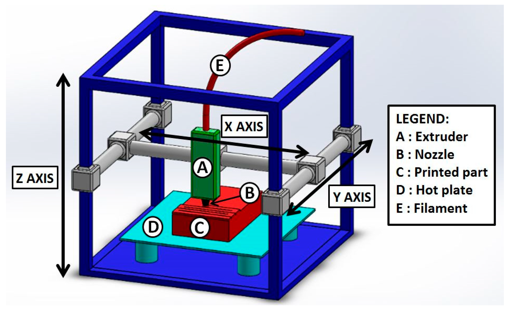
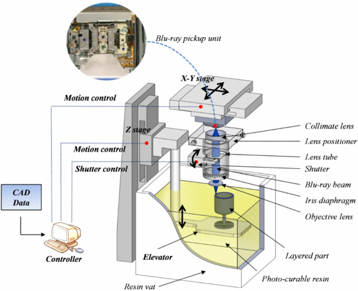
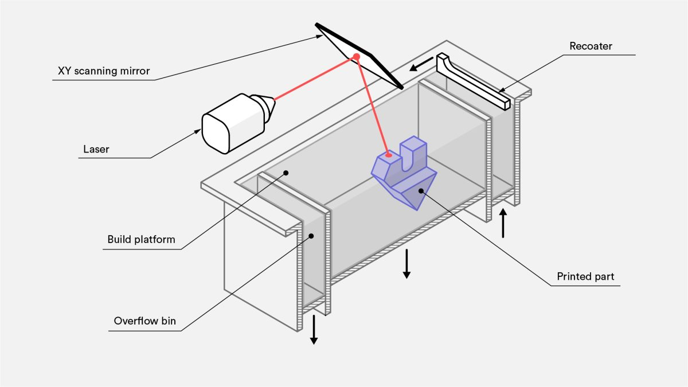
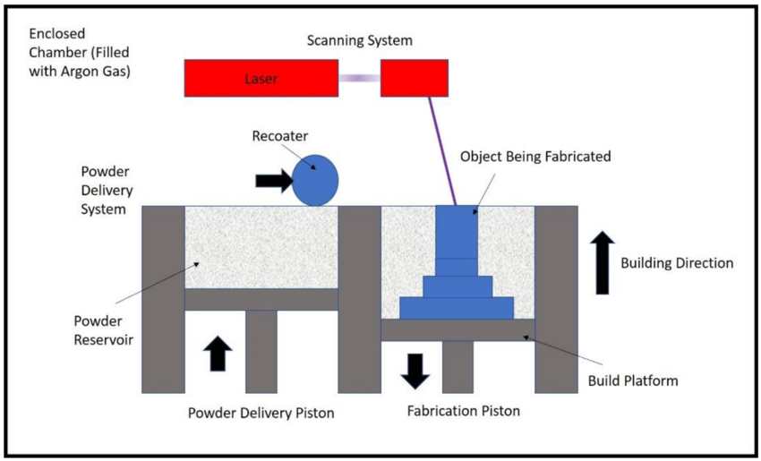

What is 3D printing
3D printing, also known as additive manufacturing, is a process of creating three-dimensional objects from a digital file by laying down successive layers of material. Unlike traditional subtractive manufacturing methods that remove material from a solid block, 3D printing builds the object layer by layer, allowing for intricate and complex designs to be realized with precision. This technology has revolutionized various industries, from manufacturing and healthcare to art and education, by enabling rapid prototyping, customization, and production of items ranging from prototypes and tools to medical implants and consumer goods.
What is 3D printing used for

3D printing is used across a wide range of industries and applications. In manufacturing and product development, it's employed for rapid prototyping to quickly create and test new designs before mass production. In healthcare, it's used to produce personalized medical implants, prosthetics, and even organs for transplantation in some experimental cases. Architects and designers use it to create detailed architectural models and intricate designs. Artists and hobbyists use 3D printers for creating sculptures, jewelry, and other artistic pieces. Additionally, it's utilized in education to teach students about design, engineering, and manufacturing processes. The versatility of 3D printing continues to expand as technology advances, making it an increasingly valuable tool in various fields.
Type of 3d printer
There are several types of 3D printers available, each using different technologies and materials. Here are some common types of 3D printers:

1.Fused Deposition Modeling (FDM): This is one of the most popular 3D printing technologies. FDM printers use a thermoplastic filament, which is melted and extruded layer by layer to create the object.

2. Digital Light Processing (DLP): Similar to SLA, DLP printers use a liquid resin that is cured layer by layer. However, instead of a laser, they use a digital light projector to cure each layer of resin all at once.

3. Selective Laser Sintering (SLS): SLS printers use a powdered material (usually nylon or metal) that is selectively fused together using a high-powered laser. They can produce strong and durable parts without the need for supports.

4. Selective Laser Melting (SLM): This is a similar process to SLS but is used primarily with metal powders. The laser fully melts the metal powder, creating dense and strong metal parts.
Process of 3D printing

The process of 3D printing involves the following steps:
1. Design: Create a 3D model using computer-aided design (CAD) software or obtain it from a 3D scanner.
2.Slicing: Use slicing software to divide the 3D model into thin cross-sectional layers.
3. Preparation: Prepare the 3D printer by selecting the appropriate material and setting up the print bed.
4. Printing: The 3D printer reads the sliced file and starts building the object layer by layer. In Fused Deposition Modeling (FDM), for example, thermoplastic filament is melted and extruded through a nozzle.
5. Cooling: Allow each layer to cool and solidify before adding the next layer.
6. Post-processing: After printing, remove any support structures, and perform finishing touches like sanding, painting, or smoothing to achieve the desired result.
7. Final Product: The completed 3D printed object is ready for use or further assembly.
Throughout these steps, the printer follows the instructions from the sliced file to accurately recreate the digital model as a physical object.
Support used in 3D printing

Tree Supports: Tree-like structures that branch out to support overhangs. They are more material-efficient than solid supports and are often used in resin-based printing technologies like SLA or DLP.

Grid Supports: A grid-like structure that provides support under overhanging areas. They are easier to remove compared to solid supports and are commonly used in various 3D printing technologies.
Precaution while using it
When using a 3D printer, it's important to take certain precautions to ensure safety and optimal printing results. First, always read and follow the manufacturer's instructions and guidelines for your specific printer model. Ensure the printer is placed on a stable surface away from flammable materials or sources of heat. Always monitor the printer while it's operating to quickly address any issues that may arise, such as filament jams or print failures, which could lead to overheating or other problems. When handling hot components or removing prints from the build plate, use appropriate protective equipment like gloves to avoid burns. Additionally, ensure good ventilation in the printing area, especially when using printers that emit fumes from melting materials, to prevent exposure to potentially harmful vapors. Lastly, regularly maintain and clean the printer, including the print bed and extruder, to keep it in optimal working condition and prolong its lifespan.